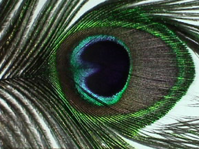
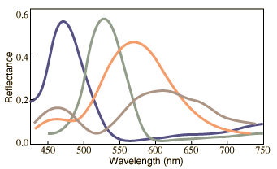
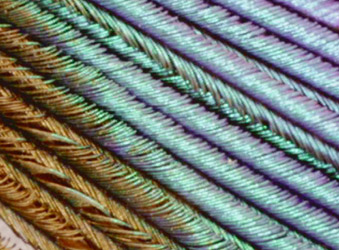
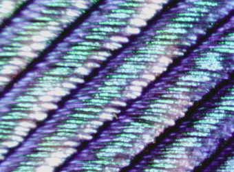
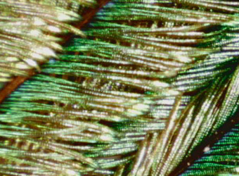
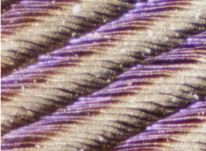
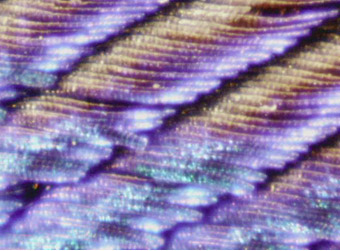
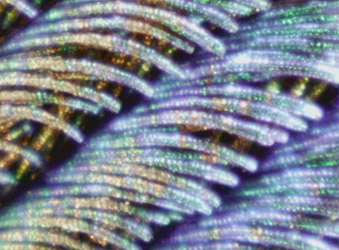

Peacock Feather Colors
|  |
The vivid colors of a peacock feather do not arise entirely from pigments - in fact, the role of pigments may be minimal. The structure of the feather plays a role in the color according to investigations by Jian Zi, Xiaochan Liu and colleagues at Fudan University in Shanghai. Another group, Shinya Yoshioka and Shuichi Kinoshita of Osaka University in Japan had reported that there were structural arrays in the barbules of the peacock feather which were measurably different for the different colored regions. The barbules are described as straplike "twigs" which come off the branches of the peacock feather.
|
At right is a qualitative sketch of the measured reflectivity of four different regions of a peacock feather as a function of wavelength. The sketch is adapted from data by Zi, et al., taken with normally incident light. They investigated the differences in structure of the different colored regions and concluded that reflections from the front and back of the structures acted like a Fabry-Perot interference device to enhance color in a specific wavelength range. |

|
|  |
The rows of colored elements become apparent in this image taken as 50x with a ProScope. These "barbules" contain nanoscale photonic lattices according to the researchers.
|
|  |
At 100x the variations in the filaments are more evident. You can also begin to see why the colors seem to shimmer. The visible color will be different at different angles of view. The structures which produce the colors are described as arrays of melanin cylinders which in a green region were measured to have an array spacing of about 150 nm. The surface of the barbule is made of keratin, containing about 10 rows of the melanin cylinders in the green region.
|
|  |
This image and those below were shot at 200x. This is just a sampling of the color variations. The final images below show some of the small colored elements in the individual fibers, and seem to show some reinforced reflections.
|
|  |
The blue regions in the barbules were found to have a melanin cylinder spacing of about 140 nm. Variations in the spacing and numbers of layers were distinctive for the different colors with yellow barbules having spacing of about 165 nm in a square lattice of about six periods. Brown barbules exhibited a rectangular lattice with about four periods.
|
|  |
The larger number of periods in the melanin cylinder structures of the green and blue barbules is associated with the narrower wavelength range of the reflected light. The yellow and brown barbules exhibited the Fabry-Perot interference, to which is attributed the contributions to their reflectance at about 450 nm.
|
|  |
This image and the two below show subtle variations in color as well as areas which seem to "fire" with more reflected intensity than neighboring regions. Irridescence in the colored regions is taken as evidence of color which is structural in its origin, as opposed to pigment color.
|
|
Index
CIE concepts
Color vision concepts
References
Blau, Steven K
Zi, J.
Yoshioka and Kinoshita |